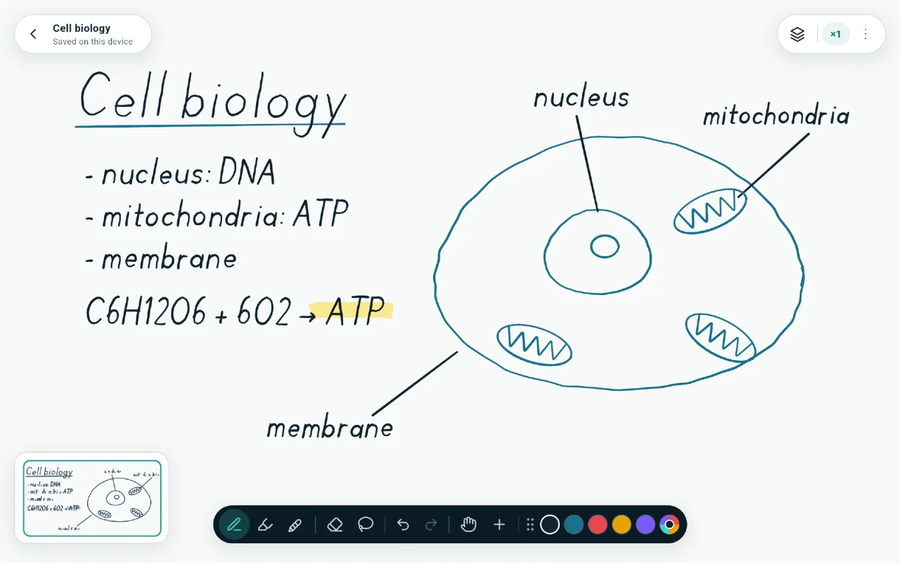
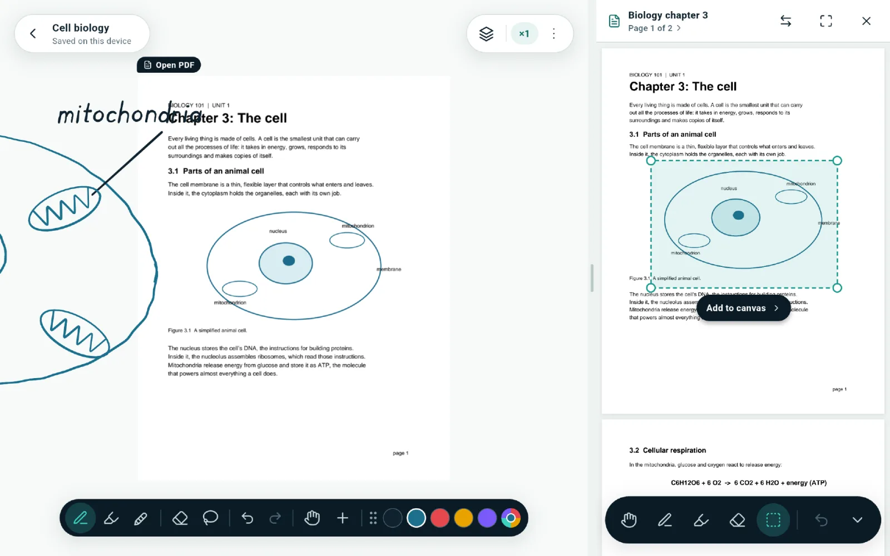
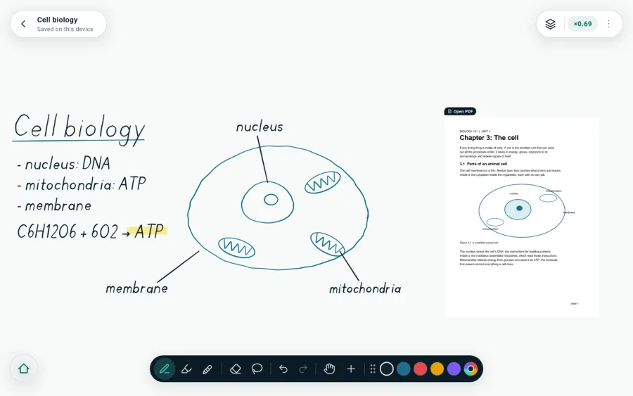
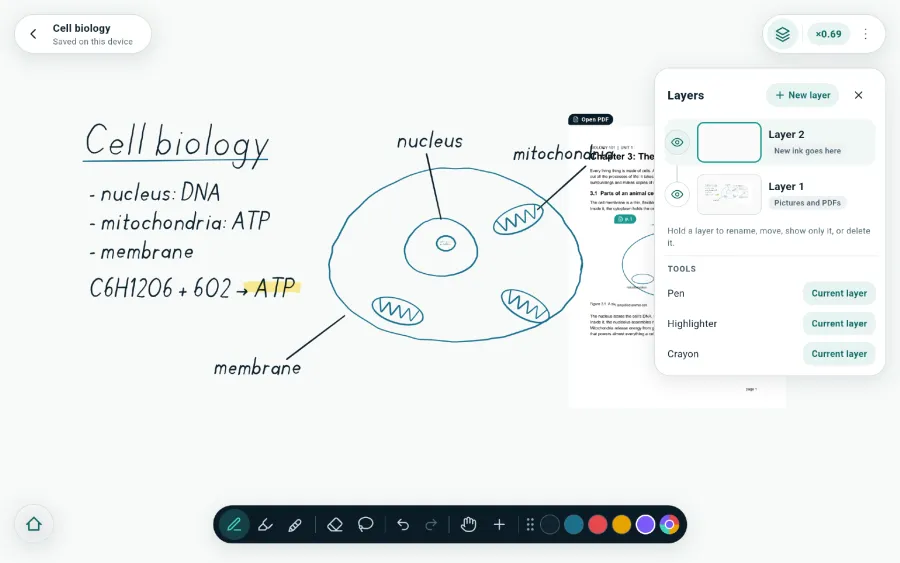
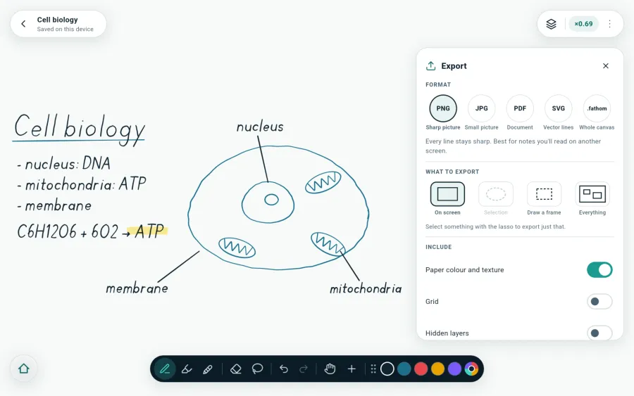
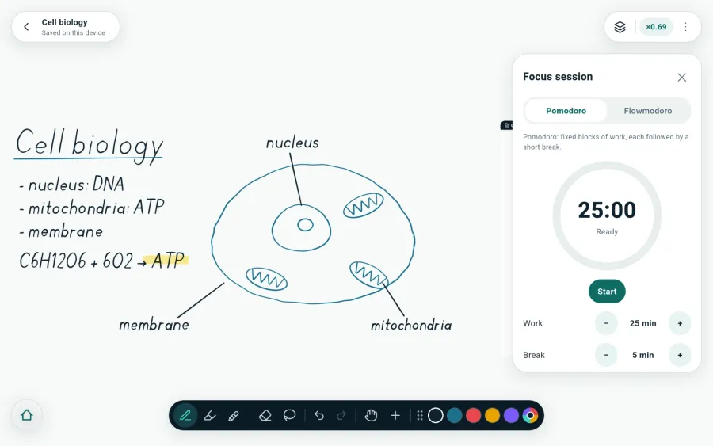
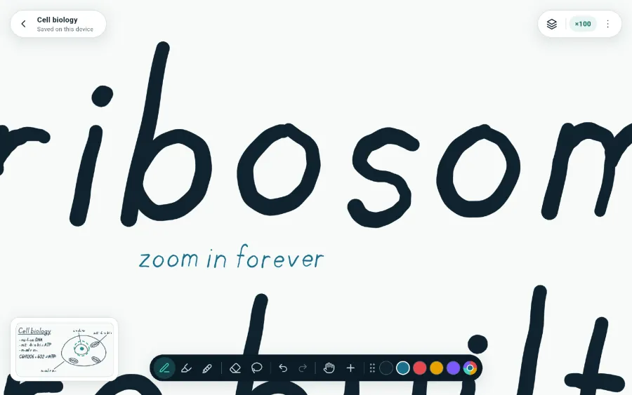
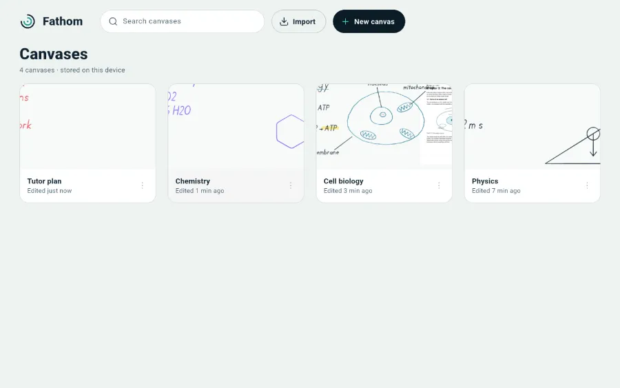

Layers
Put each part of a topic on its own layer. Hide a layer, try to draw it again from memory, then show it to check.
In early testing on Android and iPad
See the whole topic first, then zoom in for the details. Fathom is a sheet of paper with no edges, so each idea can sit next to the ideas it connects to. Your PDF and a focus timer sit beside it. Made for Android tablets and iPad, with a pen.

Zoom has no limit
Zoom out to check how the parts fit together. Zoom in to work on one part. Nothing has to fit on a page.
Fast pen, quiet paper
Write it in your own words. Your ink isn't smoothed or corrected.
Open a canvas and write straight away: no tool to choose first. The pen writes, your fingers move the page, and the controls stay small and out of the way.
Read, clip, annotate

Read on one side, think on the other. Each PDF opens again where you left it, and its card on the canvas shows the page you were reading.
Write and highlight on the pages with your pen, at the size you choose, while your fingers scroll and zoom. Draw a box round a figure, put it on your canvas, and explain it next to it in your own words.
Every clipping keeps its page. Tap its tag and Show in PDF takes you straight back to the spot it was cut from.
Everything around the page
Put each part of a topic on its own layer. Hide a layer, try to draw it again from memory, then show it to check.
Paper colours, a crumpled texture, and dots, squares or lines that keep their size at any zoom.
Add photos from the gallery or camera and crop them. Typed text cards stay sharp however far you zoom.
Circle anything to move, resize, rotate, copy or cut it. Add more to select several things at once. Move ideas around as your understanding changes.
A small map of the whole canvas shows where you are. One tap takes you back to the start.
Work in focused blocks with short breaks. A Pomodoro or Flowmodoro timer sits beside your notes, with a short task list and a history of your sessions.
PNG, JPG, PDF, SVG, or a .fathom file of the whole canvas. Export what's on screen, a selection, a frame or everything.
Every stroke is saved as you make it, undo goes back as far as you need, and deleted canvases wait in Recently deleted for 30 days.
Status and navigation bars stay hidden while you work. Swipe in from the top to see them for a moment.
A closer look






Local-first and private
Android tablets on Android 10 or newer, and iPads on iPadOS 17 or newer. It shines with an active pen like the Samsung S Pen or Apple Pencil. It runs on Android phones too, but it's designed for a tablet. Windows and macOS versions may follow later, opening the same canvases.
Email stefanmita444@gmail.com or mitagicu98@gmail.com and say which tablet you use.
Android: send the Google account you use on your tablet, and we'll add you to the testers list. Then the Google Play button opens the listing for you, signed in with that account.
iPad: send the email address of your Apple Account, and we'll invite you through Apple's TestFlight app, where Fathom is listed as Fathom Notes.
Send problems and ideas to the same addresses.
While it's in testing, yes. Pricing hasn't been decided.
No. Fathom works fully without signing in.
There's no floor. Fathom stores every position with as much precision as it needs, so a line drawn a million times deep is as crisp as one at normal size, and you can zoom far out too.
Yes: export a page or the whole canvas to PNG, JPG, PDF or SVG, or back it up as a .fathom file and open it on another device.
Fathom is in testing on Google Play for Android tablets and on TestFlight for iPad. If you study with a tablet and a pen, help us test it: email us the Google account or Apple Account you use on your tablet and we'll add you.
Email us to join the test